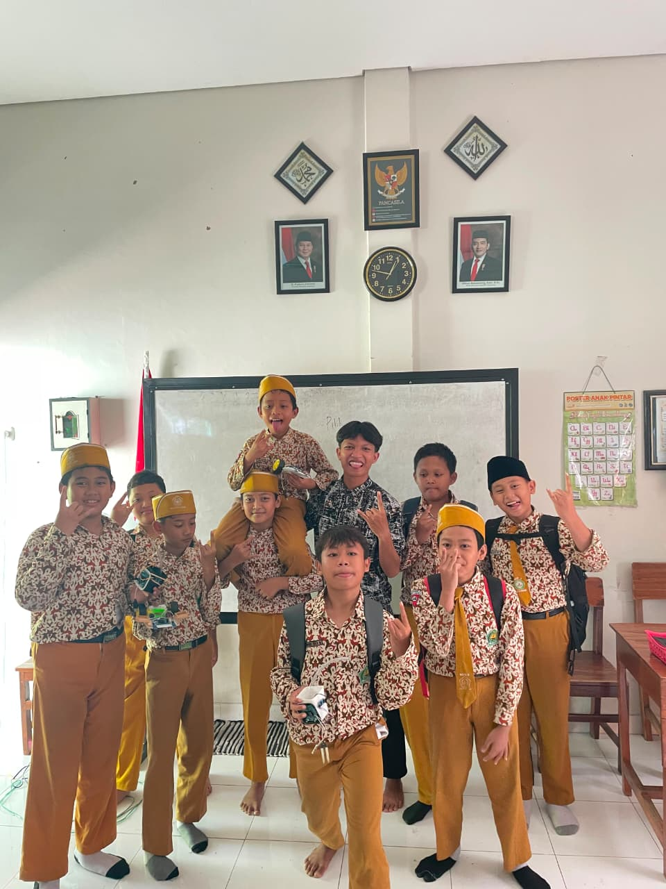
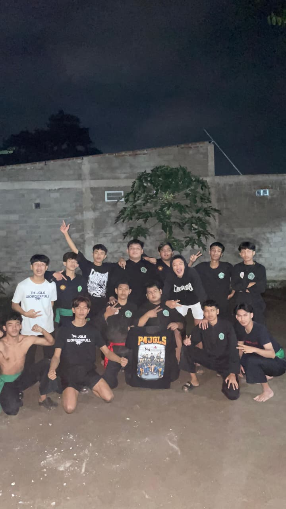
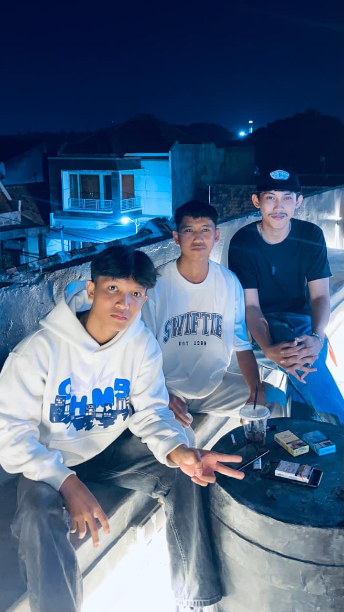

Selamat datang di ruang digital saya. Saya seorang pelajar yang menjadi web developer pemula yang senang berkreasi.
Nama lengkap saya adalah Ilyas Bintang Pratama. Lelah itu wajar, menyerah adalah pilihan. Orang kuat memilih bangkit daripada mengeluh.
Jangan menjelaskan dirimu kepada siapa pun. Mereka yang menyukaimu tidak butuh itu, dan mereka yang membencimu tidak akan percaya itu.
Jurusan: Teknik Komputer & Telekomunikasi
Tahun: 2024 - Sekarang
Pengalaman: Menjadi Ketua Kelas
Tahun: 2021 - 2024
Bisa Membuat Masakan
Punya keahlian di bidang Komputer, Jaringan, dan Pemrograman
Saya ikut silat PN LOSS, dan Public Speaking Saya Lumayan Bagus
Setiap orang memiliki timeline hidupnya masing-masing. Tidak sama, bukan berarti gagal.
Bukan gelar atau harta yang membuat seseorang dihargai, melainkan adab dan kedewasaan dalam bertindak.



Silakan hubungi saya secara langsung untuk berkolaborasi atau sekadar bertukar pikiran via media sosial: